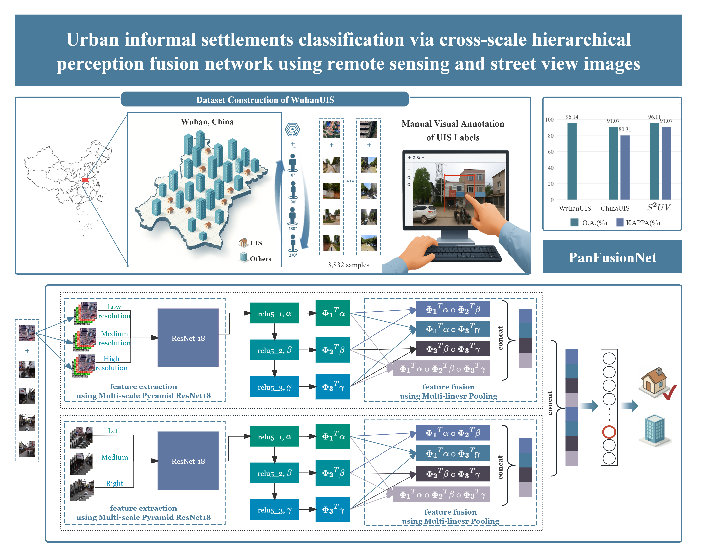
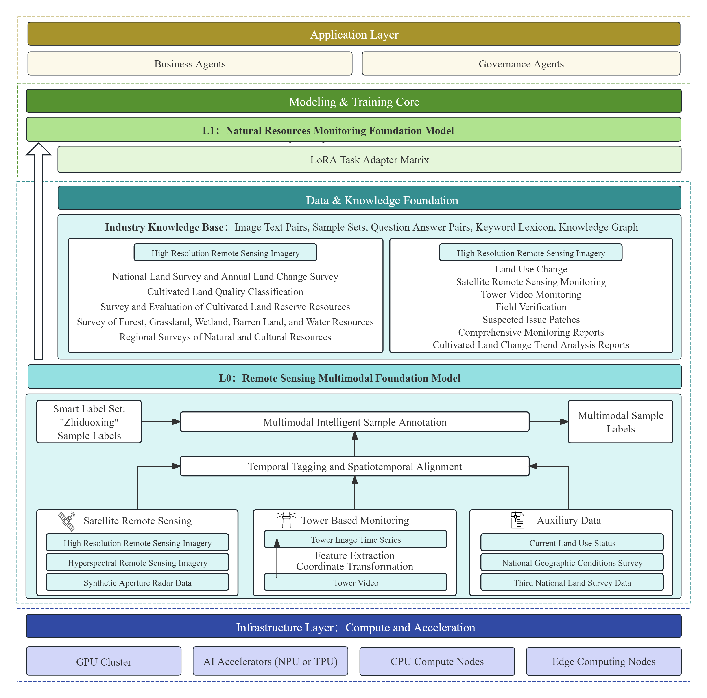

China University of Geosciences (Wuhan)
B.Eng. in Computer Science and Technology
I’m curious about new ideas and enjoy learning by trying things out. I try to be patient with both people and problems. When something gets difficult, I usually slow down, work through it step by step, and keep going.
A lot of my free time revolves around music. I play the guitar, piano, and cello, and I enjoy going to live performances. I also like hiking whenever I get the chance.
Volunteering has also been an important part of my life, and I have completed more than 200 hours of community service.
My research currently focuses on computer vision and remote sensing. In the future, I hope to learn more from the humanities and social sciences and explore how technology can become more thoughtful, inclusive, and genuinely useful, especially for people who may otherwise be left out of the design process.
B.Eng. in Computer Science and Technology

Proposed PanFusion-Net for cross-view fusion of remote sensing and street-view imagery, achieving 96.14% accuracy and outperforming Trans-MDCNN by 8.95%.

Systematically organizes major components and representative frameworks across the LLM lifecycle, with analysis of architectural trends and open challenges.
Institute of Automation, Chinese Academy of Sciences
Information Department, Xingfa Group